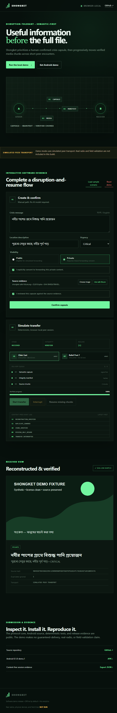

- Source hash
- Duplicates ignored
- 0
- Transport
- SIMULATED PEER TRANSPORT
DISRUPTION-TOLERANT • SEMANTIC-FIRST
Useful information
before the full file.
Shongket prioritizes a human-confirmed crisis capsule, then progressively moves verified media chunks across short peer encounters.
Asender
Breceiver
01 capsule
02 manifest
03 media
CAPSULE → MANIFEST → VERIFIED CHUNKS
INTERACTIVE SOFTWARE EVIDENCE
Complete a disruption-and-resume flow
02
Simulate transfer
Deterministic, browser-local peer session.
STAGEREADY
INTEGRITYPENDING
RESUME—
Delivery queue0 / 0
01 Semantic capsulesignal first
02 Integrity manifesthashes
03 Source chunks0 chunks
Content-free event loglatest first
- DEMO_READY
RECEIVER VIEW
Reconstructed & verified
SUBMISSION & EVIDENCE
Inspect it. Install it. Reproduce it.
The protocol core, Android source, deterministic tests, and release evidence are public. The demo makes no guaranteed-delivery, real-radio, or field-validation claim.
